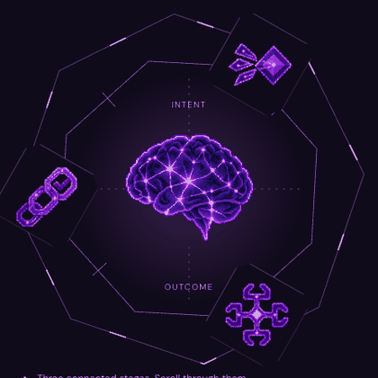
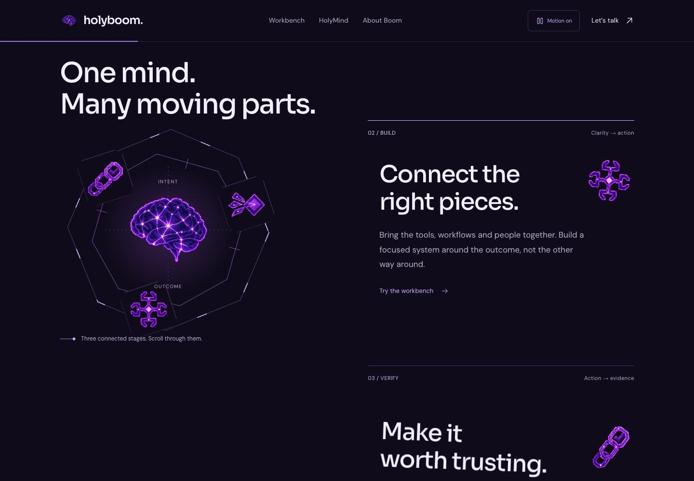
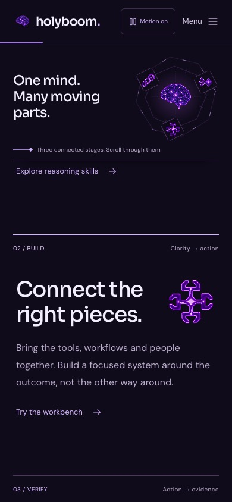

Living Mind v4.
Recorded, not mocked up.
Captured from the public GitHub Pages release on 11 November 2026. Scroll-linked orbit, original pixel-neon brain and staggered skill gallery.
The orbit follows your scroll

The GIF above was captured as a sequence of live browser screenshots. Animation is controlled by scrolling on the website, not by playing this GIF.
Desktop and mobile


31 checks in Chromium and 31 in WebKit. No failed checks or JavaScript runtime errors observed. Widths: 320, 390, 680, 768, 1024 and 1440px. Not tested on a physical iPhone.